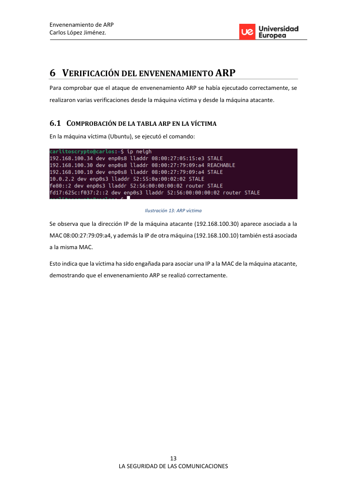
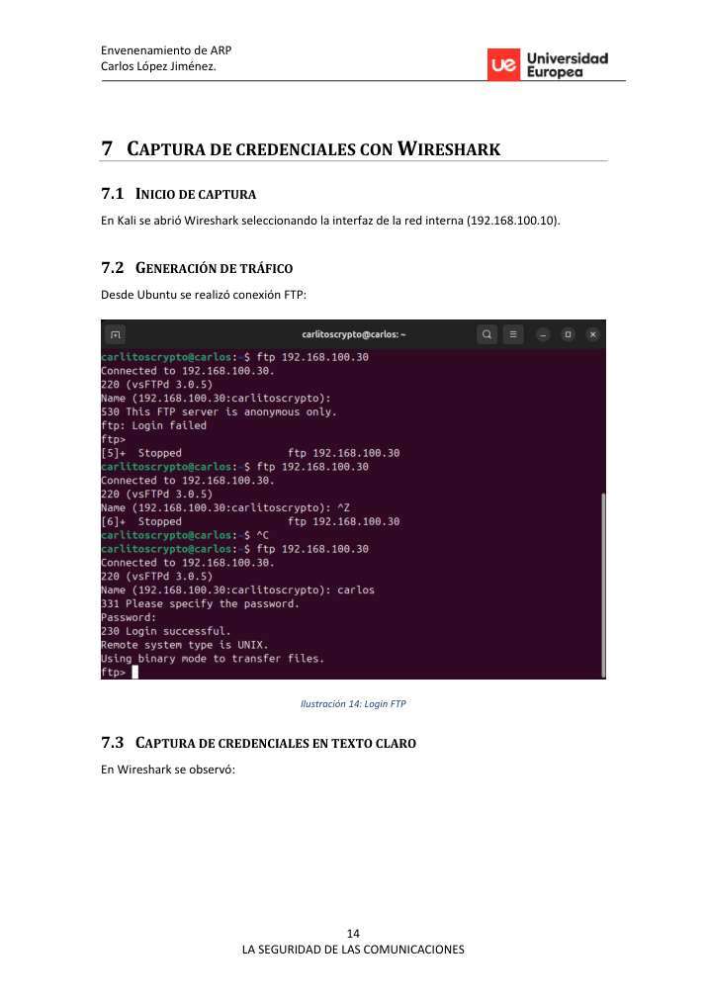

Executive summary
El laboratorio reproduce un ataque Man-in-the-Middle en una red interna controlada. Se configura un servidor FTP vulnerable, se envenena la tabla ARP de la víctima y se capturan credenciales en texto claro con Wireshark.
Attack path
La red se prepara con Kali como atacante, Ubuntu como víctima y Alpine como servidor. Se activa IP forwarding, se ejecuta Ettercap contra víctima y servidor, y se valida la manipulación de la tabla ARP antes de generar tráfico FTP.
Recruiter signal
Aporta comprensión de protocolos de red, evidencias con herramientas reales y capacidad para explicar por qué las redes internas no son seguras por defecto.
Command notebook
Comandos representativos del laboratorio. Los valores sensibles se han sustituido por placeholders.
echo 1 | sudo tee /proc/sys/net/ipv4/ip_forward sudo ettercap -T -M arp:remote -i eth1 /<victim>/ /<server>/ arp -a ftp <server-ip> wireshark &
Pasos resumidos con evidencias
Diseño del laboratorio
Tres máquinas en red interna: atacante, víctima y servidor FTP.
Configuración de red
Asignación manual de IP y verificación de conectividad entre hosts.
Servicio vulnerable
Instalación y configuración de FTP para demostrar tráfico en texto claro.
Posicionamiento MITM
Activación de IP forwarding y ejecución de Ettercap para ARP poisoning.
Verificación ARP
Comprobación de tabla ARP en la víctima para validar suplantación de MAC.
Captura de tráfico
Generación de sesión FTP desde la víctima y captura con Wireshark.
Conclusión defensiva
Recomendación de SFTP/FTPS, segmentación, ARP inspection e IDS/IPS.
Key findings
ARP has no authentication mechanism.
Impacto técnico identificado y validado durante el laboratorio. En una evaluación real se priorizaría por criticidad, explotabilidad y alcance.
FTP transmits credentials without encryption.
Impacto técnico identificado y validado durante el laboratorio. En una evaluación real se priorizaría por criticidad, explotabilidad y alcance.
A local attacker can intercept traffic if switching controls are weak.
Impacto técnico identificado y validado durante el laboratorio. En una evaluación real se priorizaría por criticidad, explotabilidad y alcance.
Visual evidence


Remediation notes
- Use SFTP/FTPS instead of FTP.
- Enable dynamic ARP inspection where available.
- Segment internal networks and monitor ARP anomalies.